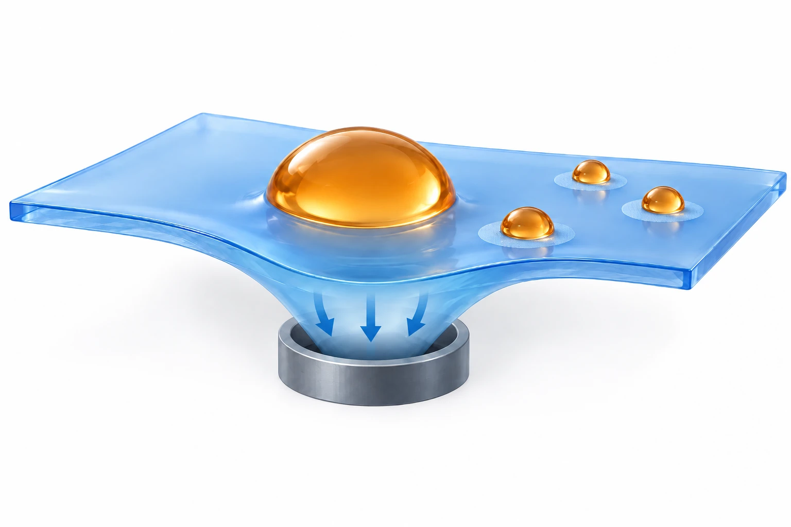

The question behind this study
A vacuum tip deforms a soft substrate from below to guide droplets, while wettable patterns retain small portions for separate assays. The study evaluates in vitro colorimetric glucose, uric-acid and lactate readouts, including glucose measurements in mouse-derived samples.
Constraints on droplet dispensing
A repellent surface can help move a sample with little retention, but an assay also needs liquid to remain at selected locations. Transport and dispensing therefore impose different requirements. The study combines these functions for liquids whose surface tension or viscosity complicates manipulation.
Deformable substrates and selective wetting
The vacuum tip does not aspirate the liquid. It deforms PDMS from below to create a moving local dimple. Droplets travel over the weakly adhesive SPO region, while SPI wettable patterns retain part of the liquid. Separating transport from retention makes pattern size and liquid properties relevant to dispensing, rather than vacuum settings alone.

AI-generated, not-to-scale concept showing how a vacuum tip deforms a substrate to guide droplets while wettable patterns retain some liquid. Arrows show substrate deformation and circles mark wettable regions.
The image does not show liquid aspiration or experimental evidence. It omits the full dispensing sequence, reagent immobilization, colorimetry, animal sampling and diagnostic validation; deflection and droplet proportions are illustrative.
This is not a reproduced paper figure and does not establish permission to reuse the original figure.
Dispensing and colorimetric assessment
Dispensing was evaluated by changing wettable-pattern diameter and measuring retained daughter droplets. The assay adds another sequence: enzyme and color reagents are deposited and dried first, sample aliquots are dispensed onto those zones, and the developed color is scanned. Successful droplet motion alone therefore does not establish assay performance; reagent placement, reaction, drying and image readout also matter.
Aliquot volumes and metabolite readout
For 1–2 mm patterns, water daughter droplets ranged from 0.05 to 1 μL; this is not the total starting-sample volume. Separate glucose, uric-acid and lactate zones enabled multiple colorimetric readouts. Glucose in mouse-derived samples was also compared with a meter. These results support integration of dispensing and assay zones, within the tested samples and workflow.
Boundaries of diagnostic interpretation
The mouse-sample comparison does not establish human diagnostic validity. The main text and Methods use different plasma/sera terminology, so this account keeps the sample description neutral. Supplementary information on device details, evaporation and storage stability is outside its scope, leaving deployment and sample-preservation conditions unresolved.
Some target concentrations in Table 1 differ from the values displayed in Fig. 5e. The reported error bound should therefore not be applied uniformly to every analyte.
Related studies
Evaluation of the Droplet-Microarray Platform for High-Throughput Screening of Suspension Cells.
DOI: 10.1177/2211068216677204 ↗
The related abstract describes wetting-patterned droplet arrays for parallel treatment and imaging of suspension cells.
Cell culture and drug-response tests differ from metabolite colorimetry in samples and readouts; small volumes alone do not establish equivalent performance.
Abstract-based introductionRESEARCH NEWS
Research in the news
체액 한 방울만으로 몸속 질병 진단한다 ↗
국내 연구진, 체액 한 방울로 질병 진단하는 바이오센서 기술 개발 ↗
KIST·연세대 연구팀, 혈액검사 혈액량 100분의 1로 줄이는 기술 개발 ↗
혈액 한 방울로 질병진단 가능해진다 ↗
[News] “미세 액적 제어 시스템” 언론 보도 ↗
Unverified candidates and access limits (3)
Unverified candidate · 바이오센서용 나노코팅기판 개발…소량 시료로 정밀측정 가능 ↗
Unverified candidate · '체액 한 방울'로 다양한 질병 동시 진단 ↗
Unverified candidate · 국내 연구진, 체액 한 방울로 질병 진단 기술 개발 ↗
Sources used in this summary
This summary draws on the main text and original figures. Supplementary materials and underlying data have not been independently reviewed in full.